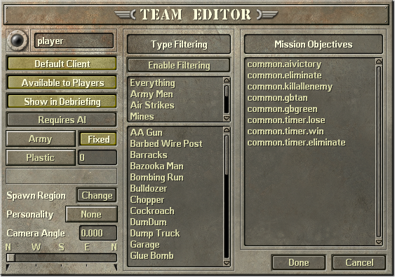
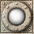

The Teams Tool and Teams Editor are used to create and modify teams respectively.
The teams tool should be opened by default when loading the studio. If it isn't, you can open it via the tools menu at the bottom left.
The Teams Tool window is the small window normally located at the top right of the screen. It has a list of current teams, as well as four buttons. Each button functions as follows:
To select a team, click on it in the list. You can also simply double click on a team to edit it, or right click anywhere on the list to deselect a team.
When editing a team's configuration, a new window will appear. This is the Teams Editor window, which contains all the relevant settings for a team. Let's go through them.
By clicking on the  icon, you may change a team's color. The color of a team is mostly used to distinguish factions from each other; most units that get assigned to teams will use these colors on their models, being the most prominent and visible color, although there are rare exceptions, such as Vikki.
You will choose a color using an RGB color scale. The campaign, great battles, and special operations missions all use the same color scheme of green vs. tan. The colors they use are as follows:
94, 242, 65.
252, 194, 107.
179, 50, 28.
Keep in mind that units may appear more or less saturated than the raw color value their team uses. When picking a color, you should take the map's lighting and units' textures into consideration. Also, when launching a multiplayer map, the multiplayer setup will override a team's default color for player teams. Non-player teams will still use their given color.
The name of the currently selected team will be displayed next to the color button. Remember, once a team has been created, it cannot be changed inside the studio. You can change a team's name by editing the
This is the team the player is automatically given when playing a single player mission. Only one team can use this at a time, but luckily setting this for one team automatically unsets it for all other teams. This setting is ignored in multiplayer.
This setting determines whether a team can be selected for multiplayer. That means, one of the bases a player can start as, or be selected on the minimap during setup. If this setting is disabled, then the team will not be taken into consideration for how many players a map supports. (e.g. a map with 4 bases + 1 unavailable team will still show as "Maximum of 4 players".)
Something else to consider: if a team is available to players, but the base goes unoccupied (e.g. playing a 6 player map with only 4 players), then that team will be completely nonexistant! That means that any units assigned to this team through studio will appear neutral ingame, and any scripts that point to this team specifically will encounter errors.
One last thing: a team that is not available to players will always exist, regardless of the multiplayer setup. This means that an ambient team that takes care of miscellanous scripts can be created, or a global enemy can be created to harass players or the like.
This setting has no purpose in single player, and can be disregarded.
Another multiplayer only setting. Teams that have this enabled will show up on the results screen after a mission. This includes players' teams and unavailable teams. Note that unavailable teams will always show up under the name "Computer".
When this setting is enabled, it allows scripts to move a team's unit around. For example, if you have a script that moves Sarge to a specific region on the map, this setting would need to be enabled. Otherwise the script would execute, but Sarge would ignore the order entirely.
This setting only applies to human players, including during single player. If a team is controlled by the computer, such as in multiplayer, or enemy teams in single player, then this setting is redundant.
This determines which faction the team uses. There are two sides, "Army" and "Insect". The only aspect of vanilla gameplay that side determines is what units a team will start with when their side isn't fixed. (See below.) There are some other checks that look at a team's side, such as for rulesets or computer personalities, but they aren't really useful with the vanilla sides.
When a team is occupied, whether by a human or computer, it will spawn with its side's default units. The default units of the "army" side is Sarge and a bulldozer. The "insect" side has no default units.
By setting the side to "fixed", you can prevent these default units from spawning, even if a team is occupied. Keep in mind that units placed within the studio will always appear during gameplay, even if a side is fixed or unoccupied. Also, if a team does not have a spawn region set, then it will have nowhere to spawn the default units.
Use this to set a team's starting resource values. The drop list on the left is the resource currently being set, while the input on the right is the value.
A team's spawn region is very important. It determines where the player's camera will initally be located when starting the mission. It determines where a side's default units will be created. And AI bases use it as their home location when no alternative is provided. The minimap marker for a base location during multiplayer setup is also automatically calculated for you based on that team's spawn region when saving a map.
There are two controls related to the spawn region. The button to the right of the label allows you to specify a region on the map to use. Pressing it will open a new window which will contain a list of all regions from which you can choose from. The second control is the panel located above the label. It will update to dynamically display the currently selected region name. Clicking on it will also jump the studio camera to the default position for that team. (You may have to save any changes to the team beforehand.)
The personality is how a computer player behaves when the team is not occupied. This only applies to teams that aren't available to players, as multiplayer setup overrides this setting, and human players obviously aren't computer players.
There are three options to choose from:
By default, the camera will face due north. You can change this by using the slider if you want. Not recommended, but there if you need it.
Type filtering is a very useful tool. It is a whitelist of units that a team is allowed to purchase. You can use it to restrict a team to specific units, such as in the early campaign missions. To use type filtering, press the button at the top. This sets the flag that enables type filtering. Without it, a team will be able to buy anything, regardless if they have a whitelist given to them.
Below is a set of two lists. The small list at the top is a quick filter of groups of units. You can use it to quickly filter units of a specific category. The categories are as follows:
Filter::Army". Basically, it encompases all army men units but not things such as insects.
Filter::Insect". Basically, it includes the Worker, Soldier, and Cockroach insects.
The second list at the bottom is more specific. It lists every unit purchaseable, and can be used to individually restrict specific units, rather than in batches. Don't forget, this is a
The team's objectives are responsible for many things, such as victory conditions, AI logic, cineractives, medal goals, and more. All these objectives will be listed in the list below. By selecting it from the list, the team will begin the mission with that objective active. If you have custom scripts, this is how you would assign them to the teams ingame. For more information, see Section 5: Creating a Single Player Mission.
For now, the list will only contain the standard set of predefined objectives. Here is a quick list of their functions:
Also be aware that rulesets assign teams objectives of their own. If you are using a ruleset, it may be best to let it handle the objectives itself, unless you have custom scripts you want running at the same time. Be aware of redunancies as well! If the studio and ruleset both try assigning the same objective twice, unexpected behavior may occur.